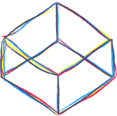
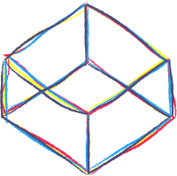

i'm maddie. i graduated with a BA in Music & Technology in 2018, but i like to make things in a lot of creative areas! i've been a musician my whole life, primarily as a flute player, and have been in various orchestras and bands since middle school. but for the last 6 years, a cappella has been the biggest area for me - i have been a musical director for two groups, a member of 3 groups, and an arranger for any and all groups! i also like to produce, edit, and mix a cappella music.
i got into design and web development when i was studying computer science for the first half of college. it was accessible, fun, and i like creating something tangible and interactive with relative immediacy. since then i've continued making my own design and development work alongside my music and audio work.
i find the most satisfaction and excitement when making interdisciplinary projects that focus on storytelling.


 
